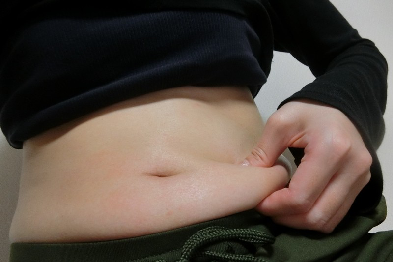

English
English
 繁體中文
繁體中文

選單
廖國鈞說明，遺傳基因組brca，是和家族史有關的特殊基因變異，擁有這組基因的人，比較容易得到乳癌或婦科常見的癌症。檢測時若發現這組基因表現為陽性，通常會建議提前預防性切除乳房，避免乳癌的發生，以防癌細胞擴散到身體，面臨一發不可收拾的下場。
除了基因外，後天的生活習慣也是原因之一，如果先天性已經帶有特殊基因變異，後天的生活習慣又不好，會是雪上加霜的情況，得到乳癌的機率會更高。廖國鈞進一步指出，像是習慣性熬夜，讓生理時鐘大亂，會影響到褪黑激素的分泌，而醫學上也證實褪黑激素與癌症發生機率有高度相關。
答案是『不會』！
廖國鈞說明，假體在全世界都有一個嚴格的審批標準，上市前必須經過8-10年嚴格的檢驗，從動物實驗開始，證實是無害的，才可以進入人體實驗，像是美國FDA、歐盟CE認證，假體只要得到其一認證，都是可以放心使用的，所以即便做過隆乳手術，並不會增加得到乳癌的機率。
先前乳癌患者在切除乳房後，若想要做重建手術，需要評估術後是否需要做放射線治療，才能決定可不可以在切除乳房後立刻進行重建手術。
現今因為假體材料、重建手術的進步，已經可以做到切除乳癌組織後，馬上進行重建手術。廖國鈞表示，乳房不只是一個身體器官，同時還代表著女性對自我形象的肯定與自尊，乳房切除對女性的身心靈會產生相當大的衝擊。不過藉由乳房重建，在切除癌細胞的當天一同重建外觀，術後康復可以和正常健康的女性一樣，甚至大膽的穿上泳裝去玩水，乳癌患者的重建手術，對生活品質、自我形象肯定，都有很大的助益。
乳房重建可以選擇2種方式，假體或是自體。
廖國鈞說明，假體隆乳因為傷口小，也相對單純，通常1周左右就可以恢復，但若用自體腹部皮瓣重建，因為傷口大，術後需要住院約2周的時間，要特別針對傷口做加強型照顧，整體的術後修復期會比較久一些。
原位癌或第一、二期的乳癌，因為癌細胞可能還沒擴散，只需要切除部分組織，缺損的部位比較少，重建的方式會比較單純、容易，就會以假體為首選。
第三、第四期的乳癌，乳房可能需要做全切除，甚至乳房深層的組織、腋下淋巴都在切除範圍時，就比較推薦自體腹部皮瓣移植，來重建組織切除所造成的大傷口缺損。
廖國鈞指出，晚期的乳癌在切除癌細胞後，通常都要做放射線治療，非常推薦自體腹部皮瓣重建，因為 肚皮組織就像一道厚實的城牆，可以保護正常細胞承受放射線的破壞性攻擊，若使用假體重建，胸部組織是很單薄的去承受放射線能量，反而會造成術後癒合能力不佳。
廖國鈞指出， 肚子皮瓣是自體移植的首選部位，除了乳房重建外，還可以享受到瘦身的優點，肚子的贅肉可以拿來重建乳房豐滿的外觀，若是產後婦女或是體態比較豐腴的人，甚至可以抽到400 c. c 的脂肪量，做到D罩杯都是可行的。
利用肚子皮瓣的另一個優點，是本身帶有自體的血液供應，跟一般的抽脂移植到胸部是完全不一樣的手術，抽脂移植的方式，若填補到胸部的脂肪細胞未被完整吸收，可能產生鈣化點，需要做切片檢查才能確定是否為惡性。不過，若 使用帶有血液循環功能的腹部皮瓣組織，不會有鈣化的問題，可以免去致癌的疑慮，術後的長期追蹤也是非常安全的。
腹部皮瓣重建是一個大工程手術，除了取下腹部皮瓣外，還要同時取下腹部皮瓣內的血管束，來保留血液循環的供應。血管束是一個相當精密的構造，醫師需要利用顯微鏡的輔助，才能把這些細細小小的血管做分離，重建時也要把胸部組織跟腹部皮瓣的血管一一對合，整個手術時間可能長達6-7小時。
廖國鈞指出， 乳頭的構造是圓柱形，若用幾何學的方式來看，乳房打開就是類似一個六邊形的構造，可以設計一個六角體的剝離空間，再像折紙的方式折回，就可以重建乳頭的形狀。
乳暈顏色的部分，等傷口癒合、拆線後，利用 紋繡的方式，可以紋出一個淡淡的粉紅色，因為粉紅色的乳暈跟乳頭，是乳房外觀上比較受歡迎的顏色，經由適當的形狀設計，加上紋繡技術，重建乳頭、乳暈的擬真程度非常高，可以呈現自然良好的外觀。
廖國鈞表示，雖然X光檢查需要針對胸部做夾壓，但因為 現今的假體相當堅韌，即便大力扭轉8圈、捲成麻花捲都不會破損，但是檢查當下的現場環境狀況不同，對胸部做夾壓的可能是金屬邊邊，因為不當的外力擠壓，還是有機率導致假體破損。
廖國鈞建議，若要做X光的乳房檢查，需提前告知現場的放射師，拿捏好機器夾壓胸部的力量。當然若有其他疑慮，也可以改做超音波，或做核磁共振等進一步更詳細的檢查。
乳房如果做過全切除，重建之後雖然不會再次發生乳癌，但廖國鈞提醒， 病灶嚴重的患者，反而要注意癌細胞擴散的問題，可能經由血液、淋巴循環擴散到腦部、骨頭、內臟器官等，即便完成治療，還是要長期追蹤，並定期做影像學檢查。
廖國鈞指出，乳癌患者的長期追蹤檢測非常重要，最容易的就是用手自我檢測， 藉由360度順時鐘觸診的方式去觸摸，若摸到硬塊，需要盡速回門診讓醫生檢查，以及每半年至一年，定期前往門診追蹤，使用電腦斷層、超音波、核磁共振來檢查乳癌是否有復發，或轉移的可能性。
廖國鈞坦言，神經修復的確會是個問題，原本的乳房組織被完全切除， 重建雖然可以恢復基本觸感，但切除乳房是為了延續生命，本來就沒辦法回到原始的敏感度，因為乳房組織跟肚皮組織的構造完全不同，只是利用「愚公移山」的技術，把肚皮移到乳房，在功能和構造不同的前提下，是無法恢復到原本乳暈、乳頭的敏感度。
雖然身體疼痛、頭髮脫落、下體乾燥、手術疤痕，或是失去乳房的敏感度，都是乳癌治療會產生的副作用，但得到乳癌是人生的一個考驗，以正面心態面對、樂觀接受治療與重建，癌後人生依舊有更圓滿的可能！